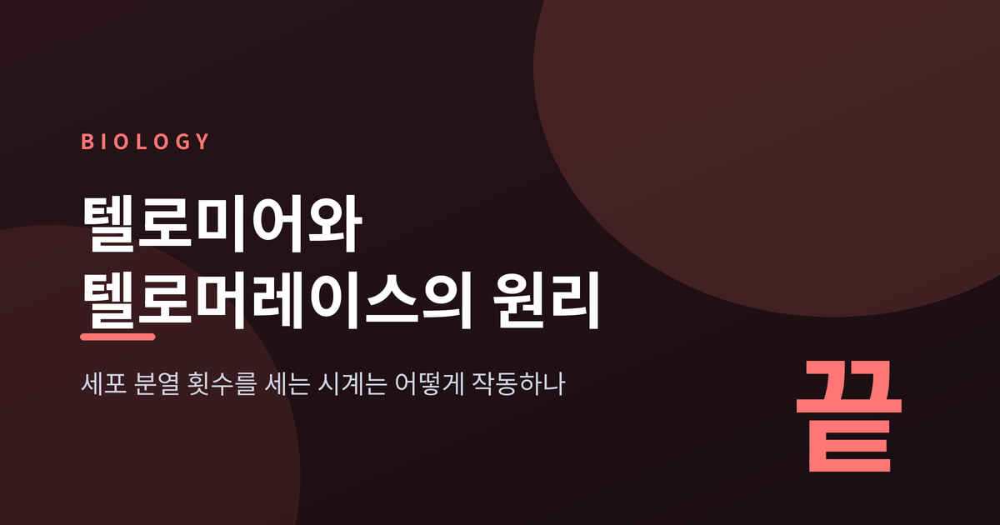
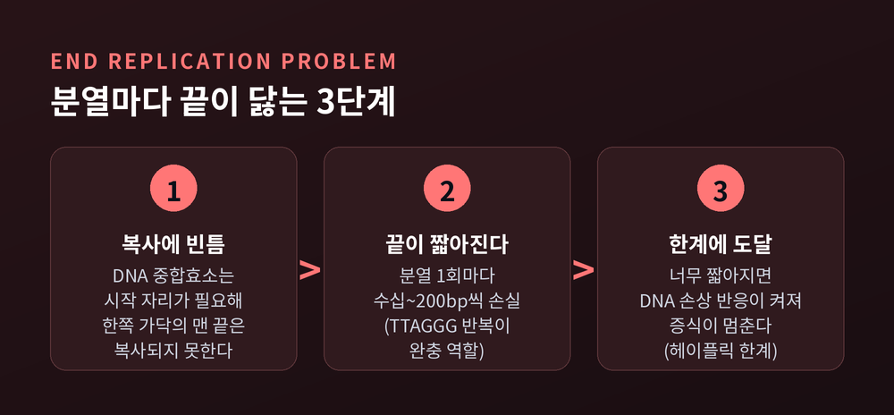
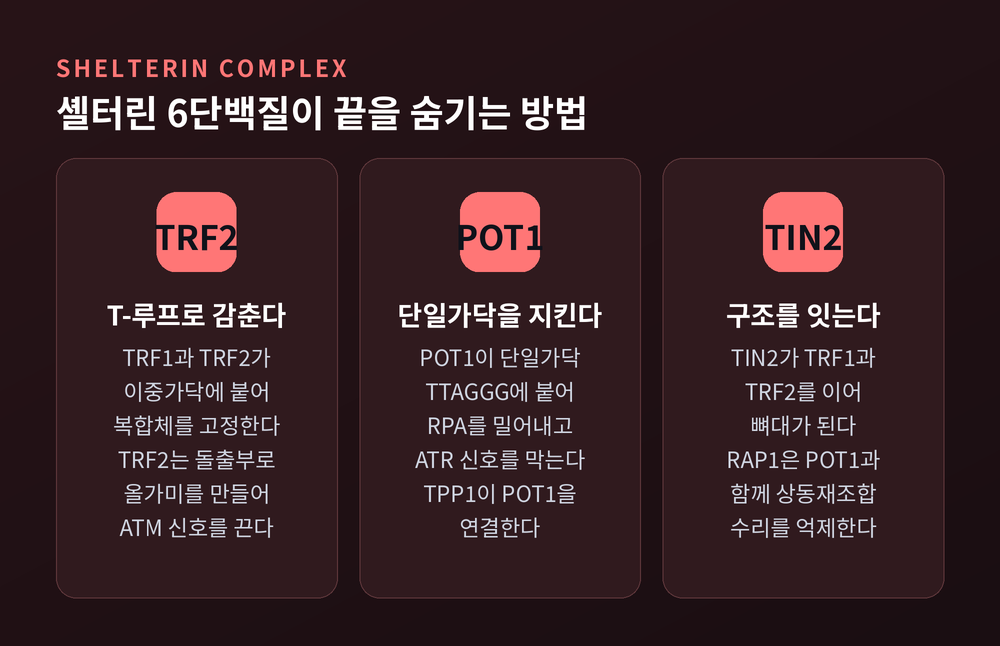
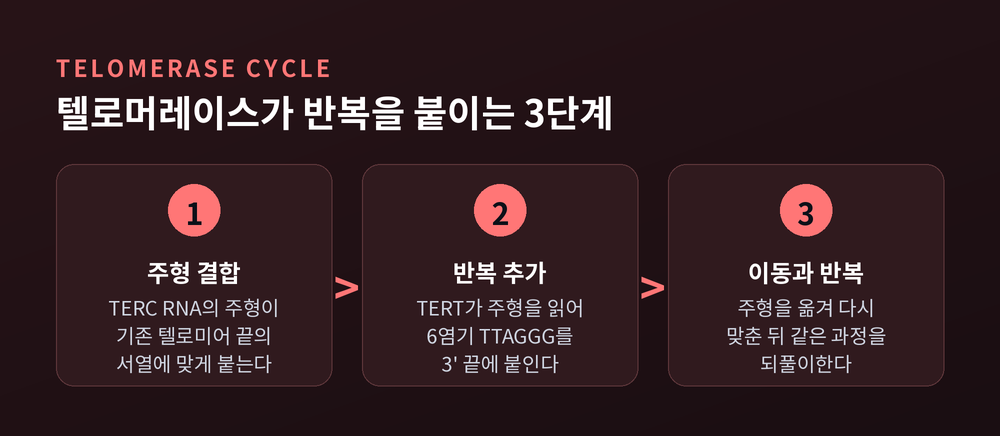
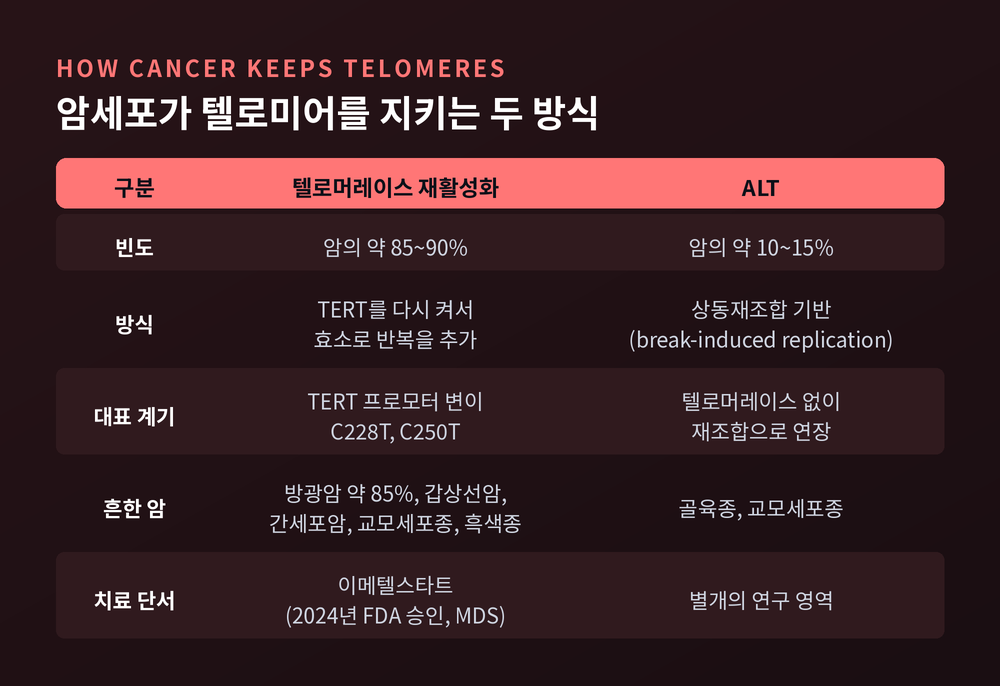
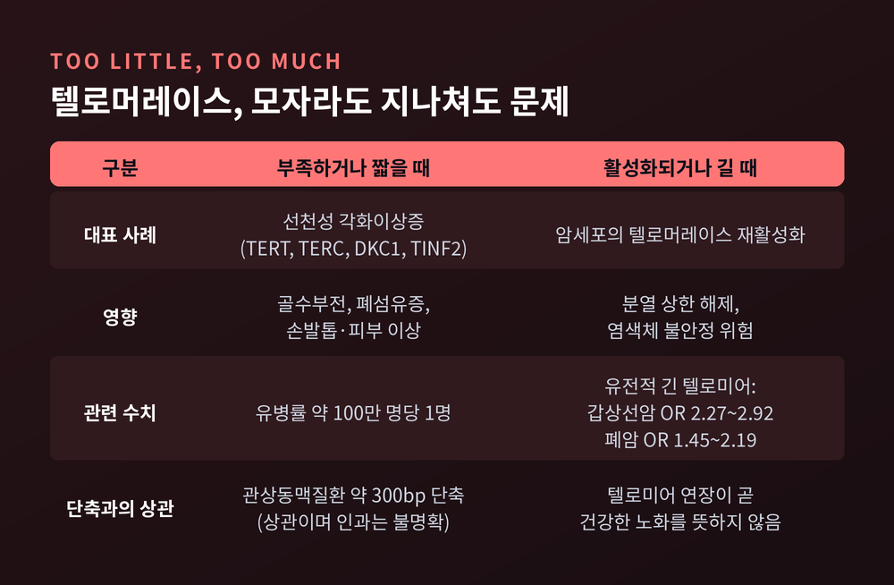

텔로미어와 텔로머레이스 원리, 세포 분열 횟수를 세는 시계의 작동 방식

오늘은 염색체 끝에 달린 텔로미어와, 그 길이를 지키는 효소 텔로머레이스에 대해 이야기해 보려 합니다. 세포가 자신이 몇 번 분열했는지 어떻게 아는지를 따라가 보는 글입니다.
먼저 결론을 세 줄로 적습니다.
첫째, 텔로미어는 염색체 말단의 보호 덮개이자, 분열할 때마다 조금씩 닳는 일종의 횟수 계수기입니다.
둘째, 텔로머레이스는 닳은 만큼 덮개를 다시 이어 붙이는 효소인데, 대부분의 체세포에서는 꺼져 있습니다.
셋째, 이 효소를 다시 켜는 쪽이 암세포의 가장 흔한 선택이어서, 텔로미어는 노화와 암을 함께 이해해야 하는 주제입니다.
헤이플릭 한계, 세포는 영원히 분열하지 않는다
예전엔 배양한 세포가 이론상 영원히 분열한다고 믿었습니다. 알렉시 카렐이 닭 심장 조직을 20여 년 길렀다고 주장한 영향이 컸습니다. 다른 연구자들은 이 결과를 끝내 재현하지 못했습니다.
1961년 레너드 헤이플릭과 폴 무어헤드가 이 믿음을 뒤집었습니다. 정상 인간 세포는 대략 40~60회 분열한 뒤 멈춥니다. 태아 폐 섬유아세포로는 평균 50회 안팎(50±10)으로 보고됩니다. 이를 헤이플릭 한계라 부릅니다.
세포 안에 분열 횟수를 세는 무언가가 있다는 뜻이었습니다. 그 정체를 둘러싼 질문이 이 글의 출발점입니다.
말단복제 문제, 복사할 때마다 끝이 짧아진다
염색체는 DNA 이중나선이 길게 이어진 선형 구조입니다. DNA 중합효소는 복사를 시작할 자리가 필요하고, 한쪽 가닥은 맨 끝까지 복사되지 못합니다. 1971년 알렉세이 올로브니코프는 이 때문에 복제본이 항상 조금씩 짧아진다고 예측했습니다. 2009년 노벨상 해설도 같은 설명을 합니다. 가닥의 맨 끝은 복사될 수 없다는 것입니다.
그 손실을 막기 위한 완충 지대가 텔로미어입니다. 인간의 텔로미어는 TTAGGG라는 여섯 글자를 수천 번 되풀이한 서열로, 성인 장기에서 대략 8~15kbp 길이입니다. 유전 정보를 담지 않은 반복이어서, 끝이 깎여도 중요한 유전자는 다치지 않습니다.
분열 한 번에 줄어드는 양은 연구마다 조금 다릅니다. 50~200bp라는 정리도 있고, 30~150bp 가운데 말단복제 문제로 인한 몫이 약 100bp라는 정리도 있습니다. 수십에서 이백 염기쌍 안팎으로 이해하시면 무난합니다.

셸터린과 T-루프, 끝을 숨기는 덮개
텔로미어는 길이만이 아니라 구조로도 일합니다. 염색체 끝이 끊어진 DNA로 오인되면 세포는 수리를 시작하고, 말단끼리 붙어 버리거나 세포주기가 멈춥니다. 이 오해를 막는 것이 셸터린이라는 여섯 단백질 복합체입니다.
TRF1과 TRF2는 이중가닥 반복 서열에 붙어 복합체를 고정합니다. POT1은 단일가닥 TTAGGG에 붙고, TPP1이 POT1을 연결하며, TIN2와 RAP1이 구조를 완성합니다.
핵심은 TRF2가 만드는 T-루프입니다. 3' 가닥 돌출부를 이중가닥 속으로 끼워 넣어 올가미 모양으로 말단을 감춥니다. 그러면 말단을 이어 붙이는 Ku70/80과 손상 감지 단백질 MRN이 접근하지 못해 ATM 신호가 꺼집니다. POT1은 단일가닥에서 RPA를 밀어내 ATR 신호도 막습니다.

텔로머레이스, 줄어든 만큼 다시 이어 붙이는 효소
올로브니코프는 불멸의 세포라면 이 손실을 메우는 효소가 있을 것이라고 예측했습니다. 1985년 캐럴 그라이더와 엘리자베스 블랙번이 섬모충 테트라히메나에서 그 효소를 찾아냈고, 2009년 잭 쇼스택과 함께 노벨 생리의학상을 받았습니다.
텔로머레이스의 특이한 점은 RNA를 품은 효소라는 것입니다. 인간에서는 촉매 단백질 TERT(2,627개 아미노산)와 RNA TERC(452개 뉴클레오타이드)가 중심입니다. TERC 안의 짧은 서열이 주형 역할을 합니다. 효소는 이 주형을 기존 텔로미어 끝에 맞추고, TTAGGG 반복 하나를 붙입니다. 이어서 위치를 옮겨 같은 과정을 되풀이합니다. 복사의 원본이 효소 안에 들어 있는 셈입니다.
활성은 세포마다 크게 다릅니다. 생식세포와 배아줄기세포에서는 켜져 있습니다. 성인에서는 정자, 표피, 일부 림프구처럼 꾸준히 분열해야 하는 세포에서 높습니다. 대부분의 체세포에서는 TERT가 거의 검출되지 않습니다. 꺼져 있기에 분열 횟수의 시계가 돌아갑니다.
1998년에는 이 인과가 실험으로 확인되었습니다. 망막색소상피세포와 섬유아세포에 TERT를 넣자 대조군보다 최소 20회 이상 더 분열했고, 형질전환은 일어나지 않았습니다. 텔로미어 단축이 시험관 내 세포 노화의 원인이라는 증거였습니다.

암은 이 시계를 어떻게 멈추는가
정상 세포의 시계는 분열에 상한을 두는 장치로 볼 수 있습니다. 암세포는 이 상한을 풀어야 합니다. 인간 종양의 약 85~90%가 텔로머레이스를 다시 켭니다.
가장 흔한 방법은 TERT 프로모터 변이입니다. 2013년 흑색종에서 -124 C>T(C228T)와 -146 C>T(C250T)가 보고되었습니다. 이 변이가 ETS 계열 전사인자 GABP가 붙을 새 자리를 만들어 TERT 발현을 켭니다. 빈도는 암마다 다릅니다. 방광암에서 약 85%로 가장 높고, 갑상선암, 간세포암, 교모세포종, 흑색종에서도 흔한 반면 혈액암, 전립선암, 유방암, 폐암에서는 드뭅니다.
텔로머레이스 없이 버티는 길도 있습니다. ALT라고 부르는 방식으로, 상동재조합을 이용해 텔로미어를 늘리며 암의 약 10~15%가 택합니다. 골육종과 교모세포종에서 흔합니다.
이 지식은 치료로도 이어졌습니다. 텔로머레이스 억제제 이메텔스타트가 2024년 6월 FDA 승인을 받았습니다. 수혈이 필요한 저위험 골수형성이상증후군이 대상이며, 3상에서 8주 이상 수혈이 필요 없던 환자가 약 40%로 위약군 15%를 웃돌았습니다. 텔로머레이스 억제제로는 첫 승인입니다.

모자라도 문제, 지나쳐도 문제
텔로머레이스가 부족하면 어떤 일이 생길까요. 대표 사례가 선천성 각화이상증입니다. 환자의 약 절반에서 TERT, TERC, DKC1, TINF2 같은 텔로미어 유지 유전자의 변이가 확인됩니다. 손발톱 이상, 목과 가슴의 그물 모양 색소침착, 구강 백반증이 특징이고 골수부전과 폐섬유증 위험이 따릅니다. 골수, 손톱, 피부처럼 빨리 분열하는 조직이 먼저 타격을 입습니다. 유병률은 약 100만 명에 한 명으로 추정됩니다.
반대 방향의 증거도 있습니다. 동아시아 집단을 대상으로 한 멘델 무작위화 연구에서, 유전적으로 텔로미어가 긴 사람은 갑상선암과 폐암 위험이 높게 나타났습니다. 오즈비는 갑상선암 2.27~2.92, 폐암 1.45~2.19입니다. 텔로미어 연장이 암과 상처 치유를 함께 촉진하고 염색체 불안정을 키울 수 있다는 리뷰도 있습니다.
그렇다면 텔로미어가 짧은 사람이 더 늙는 것이냐는 질문이 남습니다. 관상동맥질환 환자의 텔로미어가 약 300bp 짧았다거나 심부전 심장에서 최대 25% 줄었다는 관찰은 있습니다. 다만 이는 상관 관계이며, 텔로미어가 노화의 유일한 원인이라는 증거는 아닙니다. 텔로머레이스를 켜면 젊어진다는 단순한 이야기는 지금의 근거로는 지지되지 않습니다.

정리하면 이렇습니다.
텔로미어는 세포의 분열 횟수를 새기는 시계이고, 텔로머레이스는 그 시계의 태엽을 감는 효소입니다. 줄기세포와 생식세포는 태엽을 감아 오래 이어지고, 대부분의 체세포는 태엽을 감지 않아 한계가 정해집니다. 암세포는 그 태엽을 훔칩니다.
"시계가 멈추는 것도, 시계가 멈추지 않는 것도 모두 문제다."
이 균형을 이해하고 나면, 텔로머레이스를 켜서 늙지 않게 하자는 이야기가 왜 조심스러워야 하는지 보입니다. 시계를 다시 감는 일이 곧 건강한 삶으로 이어지지 않기 때문입니다.
텔로미어를 아직도 단순한 노화 시계로만 보시겠냐고 물으신다면, 이제는 그렇지 않다고 답하겠습니다. 한계가 있다는 사실이 곧 몸이 스스로를 지키는 방식이었기 때문입니다.